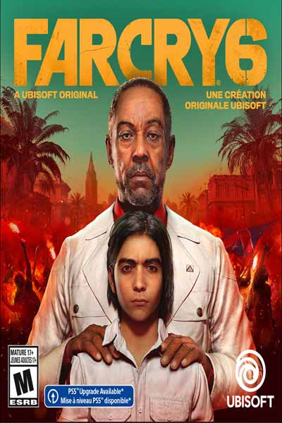

Far Cry 6 takes place in 2021 in Yara, a fictional Caribbean island nation inspired by Cuba and ruled by the dictator Antón Castillo (Giancarlo Esposito). A 1967 guerrilla revolution that toppled the presidency of his father led to Yara's isolation from the rest of the world. Since then, the country's economy has approached the brink of collapse. In 2014, Antón is elected president and oversees the creation of Viviro, a new cancer treatment developed from Yara's tobacco, promising it will make the economy stable. Seven years after being elected, Antón announces a draft "lottery" to conscript citizens as farmers in the tobacco fields. Antón has a 13-year-old son, Diego (Anthony Gonzalez), whom he grooms to be his successor.